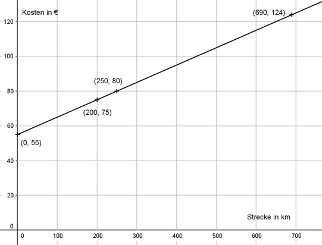

Lineare Funktionen Aufgabe 40 Ein Autoverleih verlangt 0,10 € pro gefahrenen Kilometer und eine Grundgebühr von 55 € pro Tag. a) Wie lautet die Funktionsgleichung für die Abhängigkeit der Kosten K von der gefahrenen Strecke S pro Tag? b) Vervollständigen Sie die Wertetabelle. c) Wie viel kosten 250 km an einem Tag? d) Welche Strecke hat ein Kunde zurückgelegt, wenn er 124 € bezahlen muss? a) m = 0,10 €/km b = 55 € K = 0,10 * S + 55 b) S 0 200 K 55 75 K(0) = 0,10 * 0 + 55 K(0) = 55 K(200) = 0,10 * 200 + 55 K(200) = 20 + 55 = 75 c) S = 250 km K(250) = 0,10 * 250 + 55 K(250) = 25 + 55 = 80 € d) K = 124 € 124 = 0,10 * S + 55 |-55 69 = 0,10 * S |:0,1 S = 690 km 